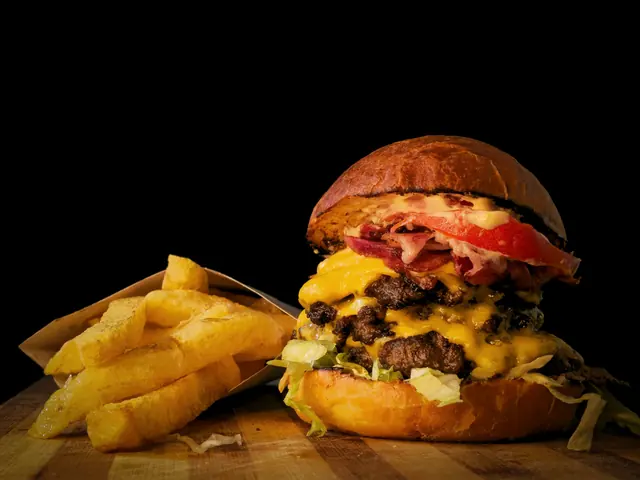
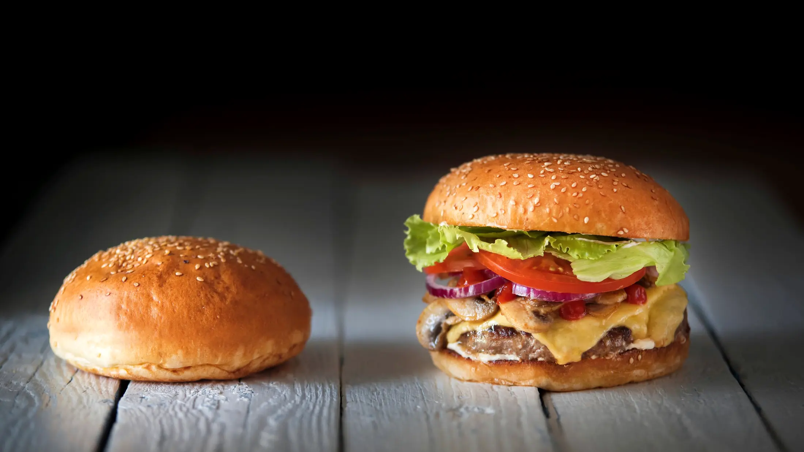
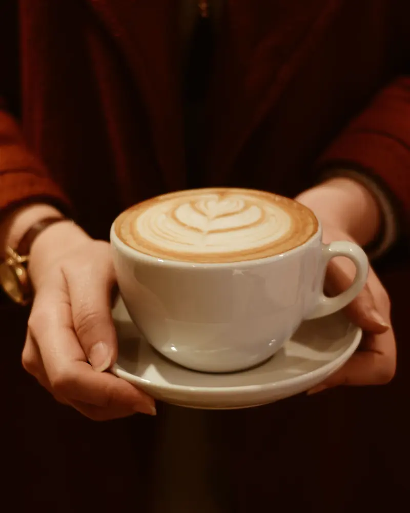
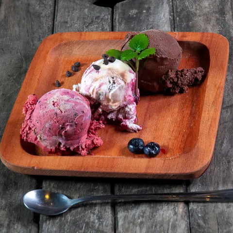
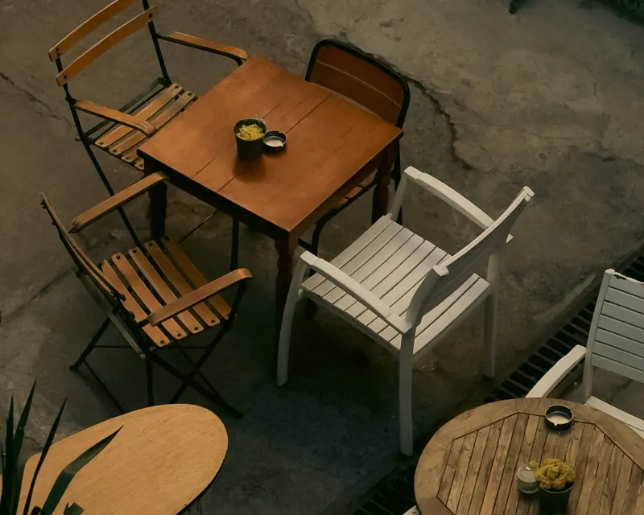
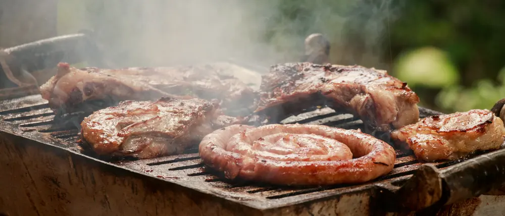

Головне в бістро
Бургери
На обід чи вечерю, з картоплею або без.

Family Bistro & Cafe на вулиці Незалежній, 209. Бургери, хот-доги, сендвічі, м’ясні страви, кава і морозиво. Є тераса, бар і безкоштовний Wi-Fi.


У будні відчиняємося о 08:00: можна зайти на каву й сендвіч перед роботою. У вихідні працюємо до 22:00, а на десерт є морозиво.

У теплу погоду можна сісти надворі. Усередині є бар. Столик для компанії чи родини можна забронювати телефоном.

Заходьте всією родиною
Вулиця Незалежна, 209 · 098 270 2624
Family Bistro & Cafe має 4,9 зірки з 5 за 10 відгуками. На мапі заклад позначено так:
Вулиця Незалежна, 209, Руська Долина, Закарпатська область. Перед візитом можна зателефонувати й забронювати столик.